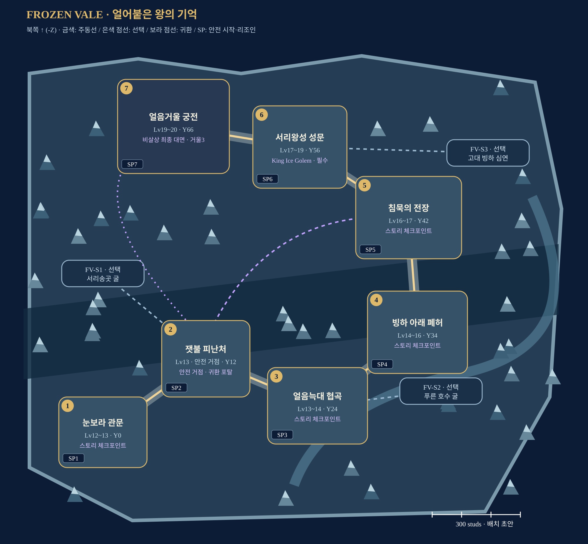

눈보라의 길을 되찾고, 얼음 아래 기록을 읽고, 세 거울에 기억을 돌려놓는 북방 원정.
제작 배치 초안 · 1~4인 · Lv12–20 · Roblox Studio 구현 전
각 스토리에 SP1~SP7 안전 시작 마당을 둔다. 시작·이어하기·재플레이·리조인을 지원하며, 스토리 사이는 직접 이동한다. 에픽 이동·안전 귀환은 포탈.

원본 지도 열기 · 제작 사양 · 좌표 데이터
내부 그림은 연결도이며 실제 축척/콜라이더가 아니다. 몬스터·장치의 정확한 위치는 블록아웃 후 결정한다.
청회색 절벽·빙하 봉우리·설송·성벽/다리·보라 포탈을 공유한다. 타워 패드와 U턴은 RPG 자유 이동 공간으로 재구성한다.
Queen Ice Elf는 세 기억 복원 후 살아남는 수호자다. Ancient Glacier King은 별도 선택 보스이며 왕좌의 왕과 동일 인물이 아니다.